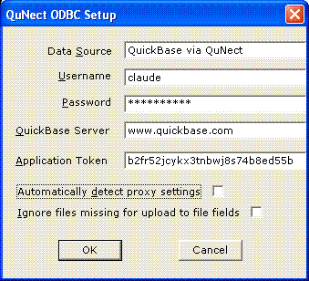

Application Note for QuNect ODBC for QuickBase
Application Tokens
When you read this, application tokens may already be required for all Quickbase applications. Application tokens are a security feature. They are like an extra password that pieces of software that want to interact with Quickbase applications must present to the Quickbase application before the application will grant them access through the Quickbase HTTP API. Since QuNect ODBC for QuickBase communicates with Quickbase applications through the Quickbase HTTP API it must present an application token. Obviously not just any application token will work because there wouldn't be much security in that. So the question is how does an application decide whether a particular application token is legitimate. Well that's easy. For a brand new Quickbase application no application tokens qualify. This means that no software can communicate with that application yet, including QuNect ODBC for QuickBase. To remedy this situation you'll need to install an application token in your application. Go to your application's home page and click on the Settings menu. Then select Application. Then click on Advanced Settings. To the right you'll see Application Tokens. Click on Manage Application Tokens. You see a button at the top center of the page labeled Assign Application Token. Click on this button and you'll have two options: Assign Existing Token or Create New Token. Since this is our first application token we need to click on Create new Token. You'll be prompted for a description. You could type in QuNect here. Click OK and you've created your first application token. You'll see it listed in the table below the button. Now you'll need to copy the application token itself which is the nonsense string of characters in the first column of the table to the clipboard.
After installing QuNect ODBC for QuickBase you should enter your Quickbase username, password and application token for the two Data Sources that were created by the installation process. Click on the Start Menu and click on the Control Panel. Then click on Administrative Tools. Then click on Data Sources (ODBC). Alternatively you can click on the Start Menu, then click on Run..., then type in odbcad32 and finally click OK.
Either way you'll end up at the dialog below:

Double click on QuickBase via QuNect. You'll see the following dialog pop up.
Enter your Quickbase username and password or usertoken.
Make sure to enter a value for the QuickBase Server property.
You can use a preexisting application token by reading the instructions on how to use an existing application token. If you use a usertoken instead of a password you don't need to supply an application token. Please read the section entitled Create and assign an application token on the Quickbase help page entitled Application Tokens. Click OK to save this information. Your User DSN is now configured.
Now let's move on to your System DSN. Back in the ODBC Data Source Administrator dialog, click on the System DSN tab. Then double click on QuickBase via QuNect. Enter the same information as above. Click OK to save this information. Congratulations! Your QuickBase via QuNect DSNs are fully configured.